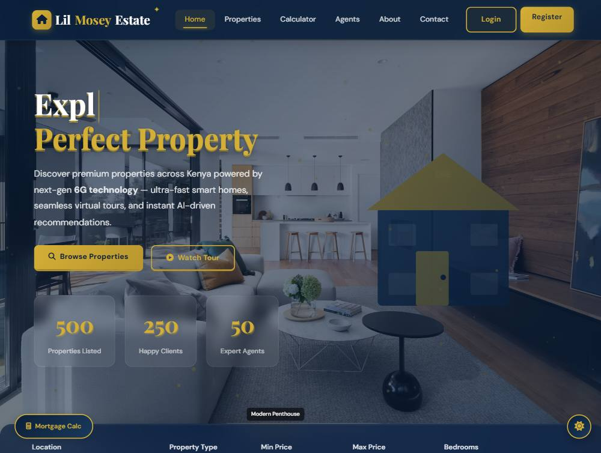

Real Estate Platform
Property search, four role dashboards and a 30-table schema

This is the largest thing I have built: a property platform where a visitor, a buyer, a tenant, a landlord, an agent and an administrator all need different views of the same data. It is the project where I stopped thinking about pages and started thinking about roles, permissions and data ownership — and about what happens when a payment, a lease or a maintenance request has to leave a record.
The brief
Property businesses run on trust and paperwork. A listing needs photos, documents and amenities attached. A viewing needs a booking. A booking turns into a lease, a lease produces rent payments, and any of those steps can trigger a maintenance request. The brief was to model that whole chain, give each role only what it needs, and keep an auditable trail of who changed what.
What I built
- A public site of 20+ pages — property search and detail views, an agent directory, a property gallery, neighbourhood guides, market insights and a mortgage calculator.
- Four separate dashboards: admin (9 screens), customer (7), tenant (5) and an agent workspace with its own property, booking and sales views.
- A listing approval workflow — submissions arrive as pending, and an administrator approves, rejects or features them.
- Bookings, leases and rent payments modelled as their own tables, with cancellation and status transitions rather than deletion.
- An email pipeline through Nodemailer — verification, password reset and templates that administrators can edit from the settings screen.
- QR payment codes generated on the server from a payment URL, with a 4–6 digit numeric PIN validated before a payment can be confirmed.
- Reviews with validated ratings, favourites, messages, notifications and maintenance requests as first-class records.
How it works
Authentication is token-based with a short-lived access token and a separate refresh token, both handled through HttpOnly cookies so browser JavaScript never touches them. That covers register, login, logout, refresh, email verification, forgot-password, reset-password and change-password as distinct endpoints, with bcrypt hashing on top.
Route files are grouped by audience — auth, admin, agent, booking, contact, review, QR — which keeps the permission rules readable: everything under an admin route is guarded by one policy, and everything under an agent route by another. Helmet, rate limiting and request validation run ahead of all of it, and Morgan feeds request logs while Winston writes application logs.
The schema is the part I am proudest of: 30 tables that start at role-and-permission level and run all the way through to leases, rent payments and lease documents. Properties are not a single table — images, videos, documents, amenities and types are their own tables, so a listing can hold real paperwork instead of one long text field. An activity_logs table records changes, which is what makes the admin dashboard worth trusting.
Honest notes on the demo
- The public pages in the live demo render from a bundled dataset shipped with the front end, so the marketing and browsing experience works without a server.
- The authenticated dashboards need the Node API and MySQL running, so they are not part of the public demo — the code is in the repository.
- The repository also contains some exploratory work: the same interface prototyped in React, Vue and Angular, and experimental PHP, Ruby and Java backends. They are kept for learning, not shipped.
What I would do next
- Move long-running work — email, QR generation, notifications — into a queue so a slow mail server cannot delay a request.
- Add integration tests around the lease and rent-payment transitions; that is where money and paperwork meet, and where a bug would actually hurt.
- Split the front end into components instead of repeating page markup, so a design change is one edit rather than twenty.